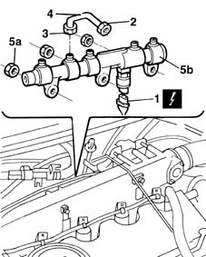
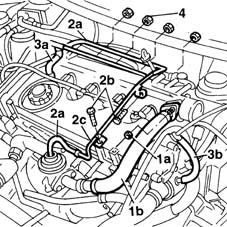
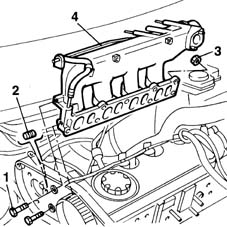

1072B10 inlet manifold - r + r and replace seal
- Path
- Procedures > 10 ENGINE UNIT > 1072 INLET AND EXHAUST MANIFOLDS > 1072B inlet manifolds > 1072B10 inlet manifold - r + r and replace seal
- Kind
- repair procedure (removal / refitting; the operation number is the code)
- Applies to
- all engines; all production periods
- Interactive page
- https://sloeber94.github.io/elrnDB-fMltpl/en/#/2891279
Applies to: engines: 1.6 16v; all production periods
 Removing
Removing
 Refitting
Refitting1048A10 AIR CLEANER FILTERING ELEMENT - REPLACE
1084A16 oil dip stick pipe - r r
1072B50 sleeves connecting air capacity box to inlet manifold is - r+r
1056B61 single fuel manifold with injectors - r+r with air conveyor/box removed
1072B14 inlet manifold - r+r and replace seal with air conveyor/box removed
Applies to: engines: 1.6 16v; all production periods
Refitting
Removing1072B14 inlet manifold - r+r and replace seal with air conveyor/box removed
1056B61 single fuel manifold with injectors - r+r with air conveyor/box removed
1072B50 sleeves connecting air capacity box to inlet manifold is - r+r
Applies to: engines: 1.9 JTD 8V; all production periods
Removing
Refitting4450B10 Front WHEEL (one) - R.R.
7055B42 Additional FRONT WHEEL ARCH (one), left or right - R.R.
1092G10 single engine belt r r
1092A12 crankshaft pulley - r+r for versions with air conditioner
1032D12 timing system protective cover(s) - r + r
1016A10 sound-proofing cover - r + r
1008C10 power unit upper reaction link r r
1008C14 engine link bracket - r r
1060E30 pressure pump pulley - r r
1060F50 fuel return manifold - r r
1060F20 pressure pump/manifold pipe - r r
1048A10 AIR CLEANER FILTERING ELEMENT - REPLACE
1080D34 engine oil vapour separator - r + r
Disconnect the electrical connections from the injectors.
 | Name | Connector |
|---|---|---|
- | Injector |
1. Disconnect the electrical connection from the fuel pressure sensor.
| Name | Connector |
|---|---|---|
1 | Fuel pressure sensor |
2. Loosen the manifold side connector for the supply pipe from the pressure pump to the manifold.
3. Disconnect the pressure pump side connector for the supply pipe from the pressure pump.
4. Remove the pipe.
5. Undo nuts (5a) and remove the single fuel manifold pipe (5b).

Applies to: engines: 1.9 JTD 8V; all production periods
1. Undo nuts (1a) and move exhaust gas recirculation (E.G.R.) pipe (1b) away from the manifold.
2. Disconnect both press-fitted rubber hoses (2a) away from the ends of the rigid vacuum pipe, unscrew retaining bolts (2b) and remove rigid pipe (2c).
3. Disconnect rigid pipe (3a) from the rigid coolant pipe section, disconect coolant hose (3b) from the thermostat.
4. Unscrew the retaining nuts and move the spark plug wiring to one side.

Applies to: engines: 1.9 JTD 8V; all production periods
1. Unscrew the bolts securing the intake manifold to the pressure pump mount.
2. Remove the pressure pump retaining stud.
3. Unscrew the retaining nuts.
4. Remove the intake manifold.
Recover the underlying gasket.

Applies to: engines: 1.9 JTD 8V; all production periods
Refitting
RemovingFit a new gasket.
Fit the intake manifold.
Tighten the retaining nuts to torque.
 | Fastening | Component | Ø | Value (daNm) |
|---|---|---|---|---|
- | Nut | INLET MANIFOLD | M8 | 3.5 |
Fit the pressure pump retaining stud.
Tighten the bolts securing the intake manifold to the pressure pump mount to torque.
| Fastening | Component | Ø | Value (daNm) |
|---|---|---|---|---|
- | Bolt | INLET MANIFOLD | M8 | 2.5 |
Fit the spark plug wiring.
Connect the engine coolant hoses to the thermostat and to the rigid pipe.
Fit the exhaust gas recirculation (EGR) pipe into its seat on the exhaust manifold and tighten the retaining nuts.
Fit the rigid vacuum pipe.
Tighten the retaining bolts and connect both press-fitted rubber hoses to the pipe ends.
Fit the single fuel manifold pipe and tighten the nuts.
| Fastening | Component | Ø | Value (daNm) |
|---|---|---|---|---|
- | Nut | INJECTOR FUEL MANIFOLD (DIESEL) | M8 | 2.5 |
Fit a new delivery hose to the fittings.
Tighten the fitting on the manifold fuel inlet hose to torque and then tighten the pressure pump fitting to torque.
| Fastening | Component | Ø | Value (daNm) |
|---|---|---|---|---|
- | Connector | FUEL MANIFOLD LINE TO INJECTORS | M12 x 1.5 | 2.2 |
| Fastening | Component | Ø | Value (daNm) |
|---|---|---|---|---|
- | Bolt | PRESSURE PUMP LINE TO FUEL MANIFOLD | M14 x 1.5 | 3 |
Connect the electrical connection to the fuel pressure senor.
| Name | Connector |
|---|---|---|
- | Fuel pressure sensor |
Connect the electrical connections to the injectors.
| Name | Connector |
|---|---|---|
- | Injector |
1080D34 engine oil vapour separator - r + r
1048A10 AIR CLEANER FILTERING ELEMENT - REPLACE
1060F20 pressure pump/manifold pipe - r r
1060F50 fuel return manifold - r r
1060E30 pressure pump pulley - r r
1008C14 engine link bracket - r r
1008C10 power unit upper reaction link r r
1016A10 sound-proofing cover - r + r
1032D12 timing system protective cover(s) - r + r
1092A12 crankshaft pulley - r+r for versions with air conditioner
1092G10 single engine belt r r
7055B42 Additional FRONT WHEEL ARCH (one), left or right - R.R.
Topics linked from this page (22)
- 1008C10 power unit upper reaction link r r
- 1008C14 engine link bracket - r r
- 1016A10 sound-proofing cover - r + r
- 1032B14 toothed timing belt - r + r for timing adjustment or replacement versions with air conditioner
- 1032D12 timing system protective cover(s) - r + r
- 1048A10 AIR CLEANER FILTERING ELEMENT - REPLACE
- 1056B61 single fuel manifold with injectors - r+r with air conveyor/box removed
- 1060E10 pressure pump - r r
- 1060E30 pressure pump pulley - r r
- 1060F20 pressure pump/manifold pipe - r r
- 1060F50 fuel return manifold - r r
- 1072B14 inlet manifold - r+r and replace seal with air conveyor/box removed
- 1072B50 sleeves connecting air capacity box to inlet manifold is - r+r
- 1080D34 engine oil vapour separator - r + r
- 1084A16 oil dip stick pipe - r r
- 1092A12 crankshaft pulley - r+r for versions with air conditioner
- 1092G10 single engine belt r r
- 4450B10 Front WHEEL (one) - R.R.
- 5530B10 battery - r+r
- 7055B42 Additional FRONT WHEEL ARCH (one), left or right - R.R.
- K83 Fuel pressure sensor
- N70 Injector